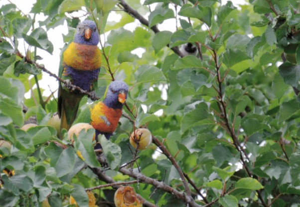

Why Are Trees Important?
Trees are extremely vital components of the natural habitat. Without trees, there would not be a suitable environment
for life on earth. Trees have a significant impact on the environment, wildlife, and human health and therefore must be protected.
The following section details the importance of trees.
Trees are essential for our Health
Trees act as a filter by removing airborne pollutants from the atmosphere,
thereby keeping our lungs healthy and also providing cleaner water. Trees are
also highly prized for their medicinal value and healing qualities of their leaves,
bark, and sap. In addition, studies indicate that when someone is surrounded by trees,
their blood pressure and stress levels go down.
Trees greatly benefit the environment
Trees absorb carbon dioxide and pollutant gases like ozone,nitrogen oxides, and carbon monoxide, which in turn drastically reduce the effects of climate change.
Trees also reduce wind speed and cool the air as they lose moisture and reflect heat. Additionally, trees also help to prevent
flooding and soil erosion by absorbing stormwater.

Trees help wildlife
Trees host complex microhabitats. They give housing and food to incredible communities of birds,
insects, lichens and fungi. When old, their trunks also provide
hollow cover for species such as bats, beetles, owls, and woodpeckers
during periods of excessive heat or snow. Animals are capable of enjoying tasty fruits and
foraging opportunities as the trees mature.